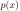
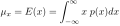
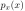
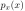

Next: Probability of multivariate random Up: probability Previous: probability
A random experiment is a procedure that can be repeated an infinite
number of times and has a set of possible outcomes.
The sample space S of a certain random experiment is the totality
of all its possible outcomes.  may be either countable (discrete) or
uncountable (continuous).
may be either countable (discrete) or
uncountable (continuous).
For example, “Randomly pick a card from a deck of 10 cards labeled
” is a random experiment. The sample space is a set of
the 10 possible outcomes:
 .
.
An random event
is a subset of , which can be a null
set (empty set) , a proper subset, e.g.,
, or the entire .
Event  occurs if the outcome is a member of . The
probability
occurs if the outcome is a member of . The
probability  of an event is a real-valued function that maps
to a real number
. In particular,
,
and .
of an event is a real-valued function that maps
to a real number
. In particular,
,
and .
For example, “The randomly chosen card has a number smaller than 4” is
a random event, which is represented by a subset
.
The probability of this event is
 . Event occurs if the
outcome is one of the member of (e.g., 2).
. Event occurs if the
outcome is one of the member of (e.g., 2).
The triple
of sample space , events and probability  is called the probability space.
is called the probability space.
A random variable is a real-valued function that maps any outcome
into a real number  , which can be either continuous or discrete.
, which can be either continuous or discrete.
The joint distribution function of a random vector  is
defined as
is
defined as
 |
 |
||
|
(1) |
in the N-dimensional vector space.
For convenience, let us first consider two of the  variables and
rename them as and
variables and
rename them as and  . These two variables are independent
if and only if
. These two variables are independent
if and only if
| (2) |
and  are defined as “” and “”,
respectively. This definition is equivalent to
are defined as “” and “”,
respectively. This definition is equivalent to
| (3) |
|
|||
|
(4) |
Similarly, a set of variables are independent iff
| (5) |
The conditional probability  is the probability of event
given that event has already occurred. If event is independent
of event , then
is the probability of event
given that event has already occurred. If event is independent
of event , then
 .
.
Let and be two events defined over .
or ,  .
.
| (6) |
| (7) |
| (8) |
and ,  .
.
| (9) |
| and | (10) |
| (11) |
In particular, if A and B are independent, i.e.,
| and | (12) |
| (13) |
is the probability of event
averaging over information about (the value of is unknown):
 |
(14) |
Let
 be a set of
be a set of  events that partition the
sample space , i.e.,
events that partition the
sample space , i.e.,
| and | (15) |
| (16) |
Proof:
| (17) |
| (18) |
The cumulative distribution function of a random variable
is defined as
| (19) |
| (20) |
The density function  of a random variable is defined by
| (21) |
| (22) |
| (23) |
| (24) |
If a random variable can only take one of a set of finite
number of discrete values
, then its
probability distribution is
| (25) |
| (26) |
| (27) |
The expectation (or mean value, average) of a
random variable is defined as the average of all possible values
of weighted by their corresponding probabilities, or alternatively,
the average of the probabilities of all possible values weighted by
these values. If is discrete,
| (28) |
is continuous,
|  | (29) |
Given a set of samples
of a discrete random
variable , but without any knowledge about their probability , we
can find the maximum likelihood estimation of the expectation by
| (30) |
The median of a random variable is defined as the midle value
of its distribution. If is discrete, then its median
is defined as
| (31) |
is continuous, then the median is defined such that
| (32) |
The mode: the value that appears most frequetnly among .
| i.e., | (33) |
The mean, median, and mode are the same if is unimodal (e.g., a normal distribution), but they are all different from each other if is asymmetric.
For example, given values in , we can find their mean as
 |
(34) |
 and
and  .
.
The variance of a random variable  is defined as
is defined as
| (35) |
is continuous, or
![$\displaystyle \sigma^2=Var(x)=E[(x-\mu)^2]=\sum_{i=1}^n (x_i-\mu)^2 P_i$](img91.svg) |
(36) |
is discrete.
The standard deviation of is defined as
| (37) |
We have
 |
|
![$\displaystyle E[(x-\mu)^2]=E(x^2-2\mu x +\mu^2)$](img94.svg) |
|
|
(38) |
Random variable has a normal distribution if its density
function is
 |
(39) |
| (40) |
 |
(41) |
| (42) |
A function  of a random variable is also a random variable.
If the density function of is , the density function of
can be found by considering the cumulative distribution function
of :
of a random variable is also a random variable.
If the density function of is , the density function of
can be found by considering the cumulative distribution function
of :
| (43) |
| (44) |
| (45) |
| (46) |
| (47) |